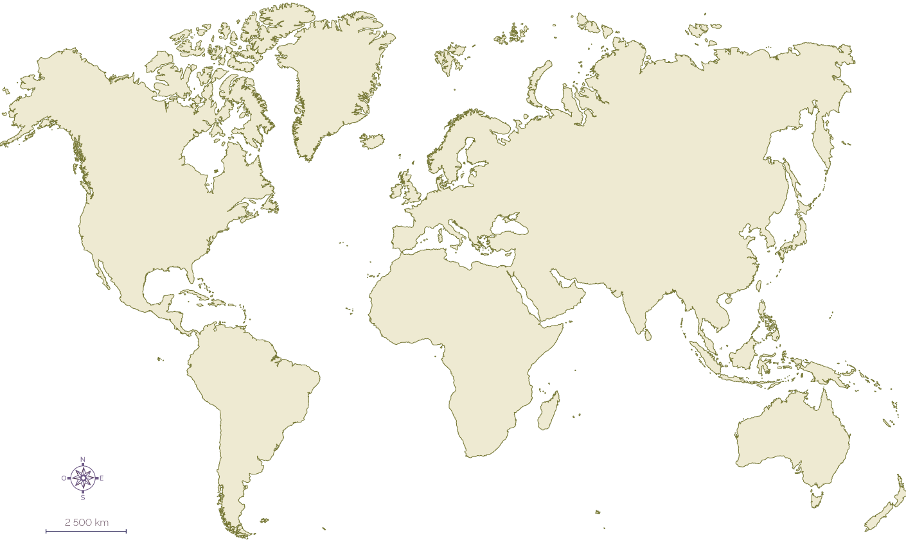
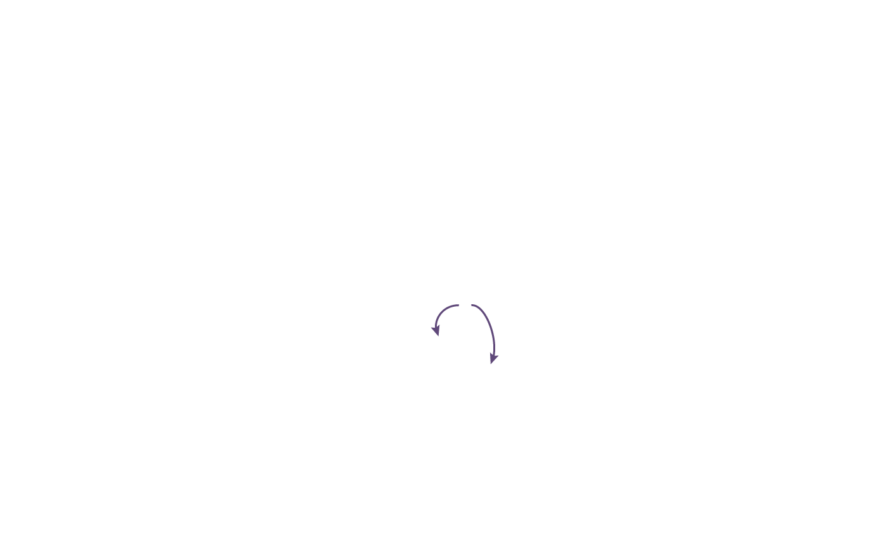
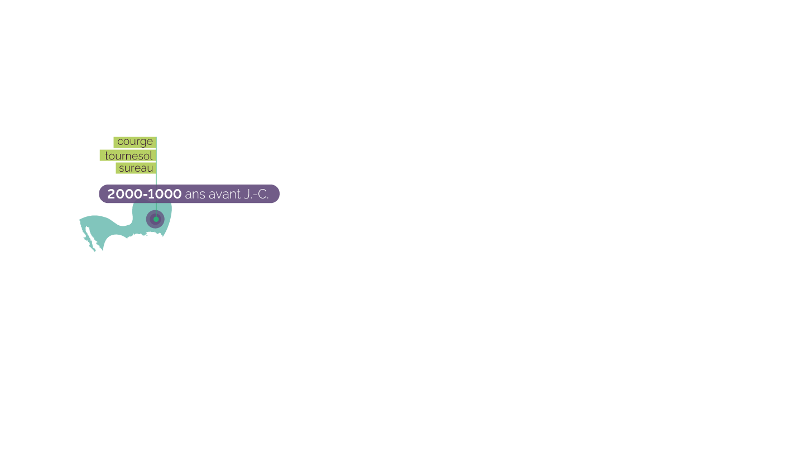
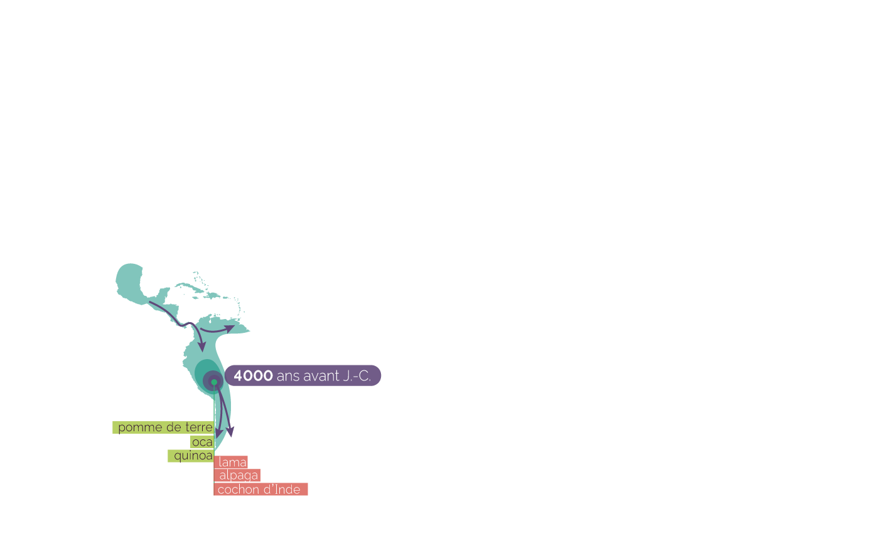
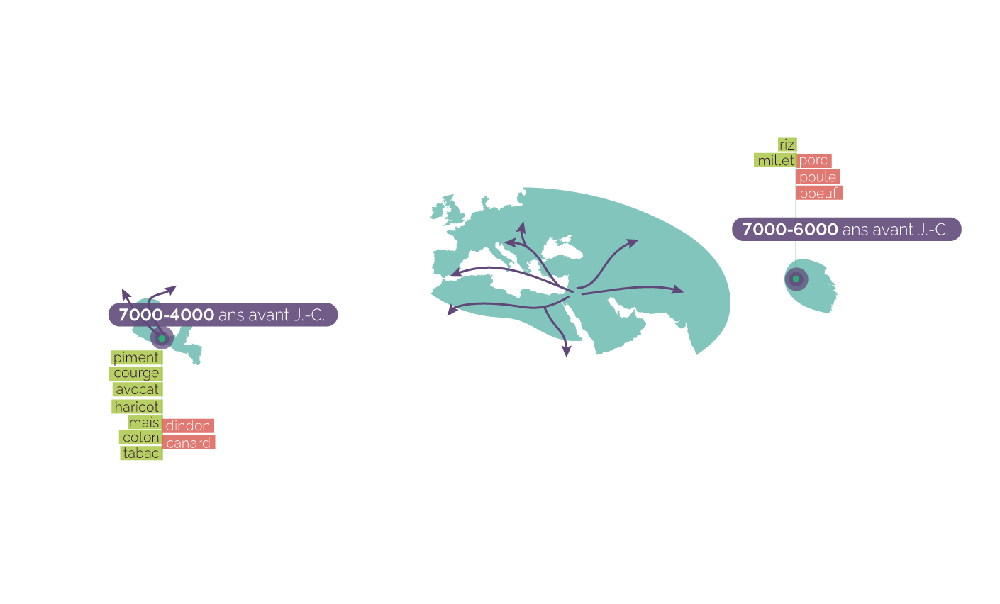
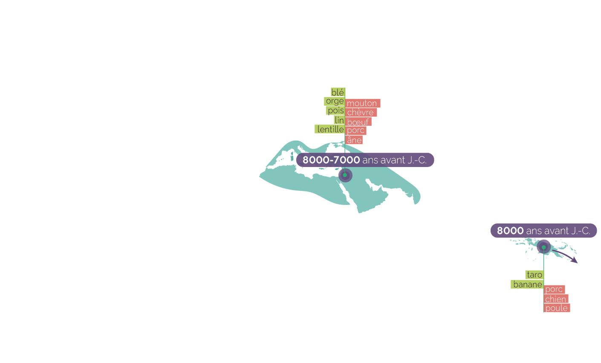
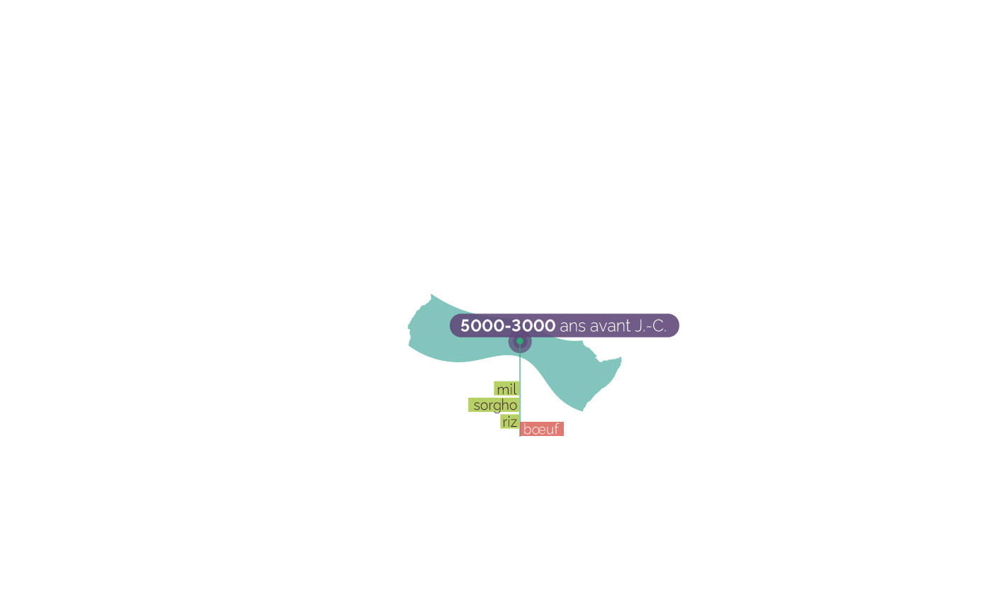

La Révolution néolithique
Rôle de l'être humain dans l'évolution des milieux naturels







foyers de la révolution néolithique
régions de développement de l'agriculture
mouvements de diffusion de l'agriculture
Sources : La Révolution néolithique dans le monde, sous la direction de Jean-Paul Demoule, CNRS Éditions, 2010